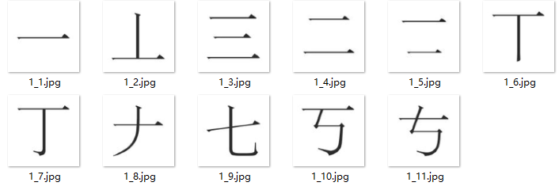

Public Dataset (HYDDB)
The part 1 of dataset
The part 2 of dataset

| Dataset | image number | image size |
|---|---|---|
| Part1 | 55,360 | 120 pixel |
| Part2 | 55,360 | 120~150 pixel |
- We build a dataset based on HanYu Dictionary named HYDDB. It consists of two parts.
- The Part 1 has template images of 55,360 Chinese characters, all images are 120*120 pixels.
- The Part 2 has 168 full-page images of printed characters and corresponding segmented images of isolated characters, as a total of 55,360.
- We labeled each character template image in the order of the page number of the main body, and characters on the same page are labeled in the order of the dictionary directory. The segmented images in Part 2 are equal in length and width but have different pixels.
- You can use the dataset by following link.
- Download Link (The Part 1 and 2 of HYDDB)